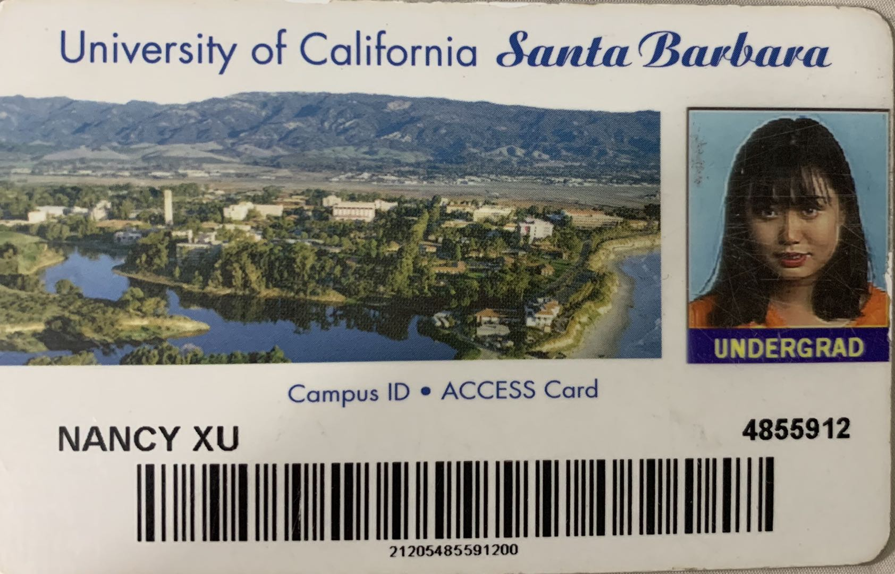

It is hard to summary my university life because it is so complex. I was in Whatcom Community College in Washington State for my freshman and sophomore year, University of Minnesota Twin Cities for my Junior year and University of California Santa Barbara for my Senior year. Life was enjoyable in WCC, relax in UMN and nervous in UCSB. I grew up quickly in my last year at university, and I feel like I understand the world and life deeply. After I graduate, I have stayed in America for five years, and I decided to change an environment for myself.